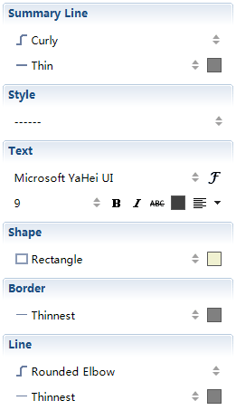

Summary
Summary is a brief description of topic areas on the map, and is used to highlight the major points for helping the audience quickly grasp the purpose of the map topics.
To add a Summary:
- Select the targeted topics to add to the summary.
- You can use following methods to create a summary:
- Use shortcut key "Ctrl+]" to add a summary.
- Right-click with your mouse, and choose "Insert > Summary" from the context menu.
- Choose "Insert > Summary" from the menu.
- Edit the summary topic by typing directly.
- You can create the subtopics within the summary topic by clicking the "Tab" key.
- Move the slides at the top and bottom of summary box to change the scope of the summary.

To change summary properties:
- Select a summary, and open the Properties view.
- You can change the following properties:
- Summary Line Style, and color.
- Summary Topic text formatting, Line, box shape, Structure and etc.

To delete an existing summary:
- Select a summary, and click "Delete" on the keyboard.